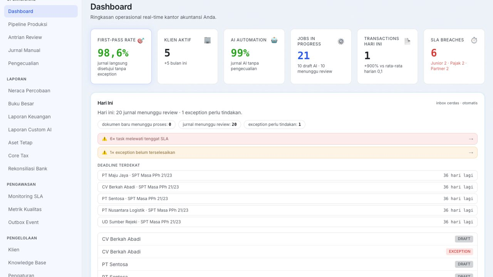
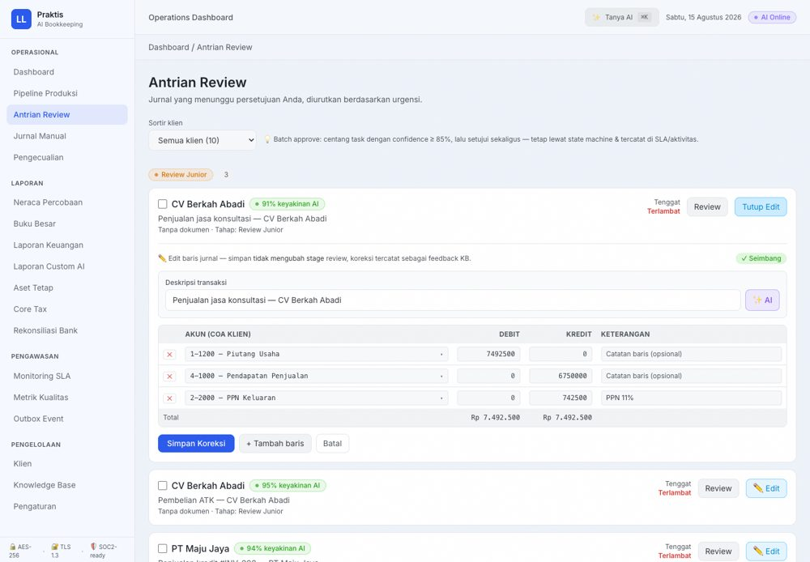
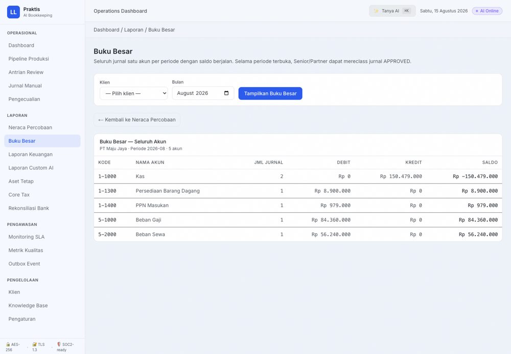
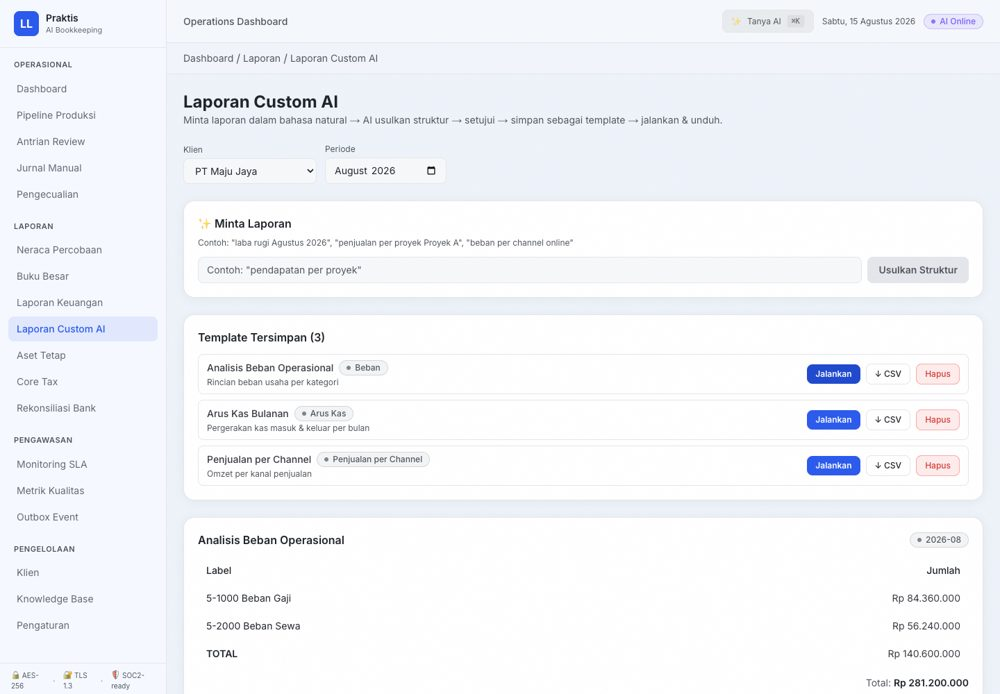
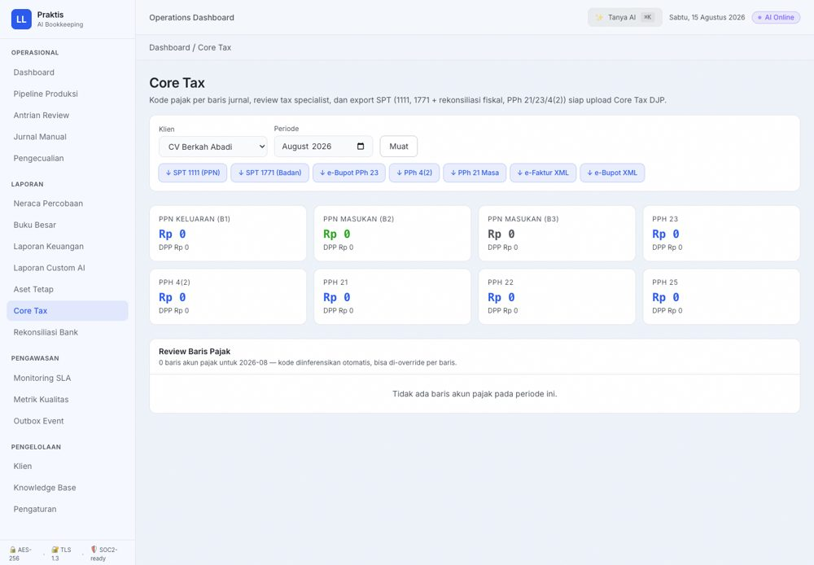
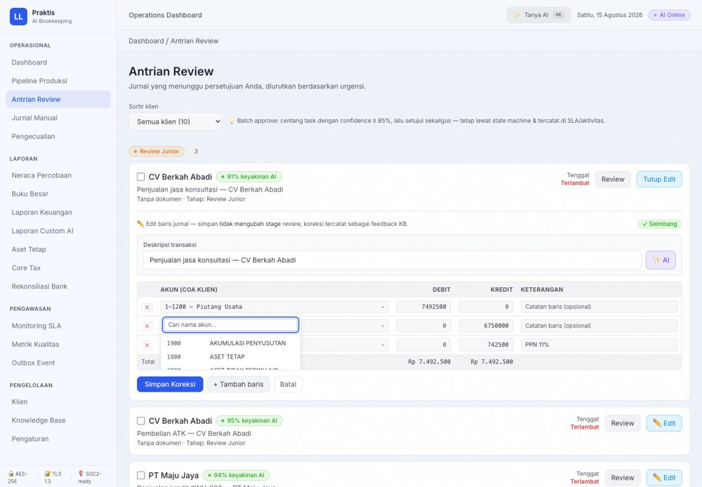
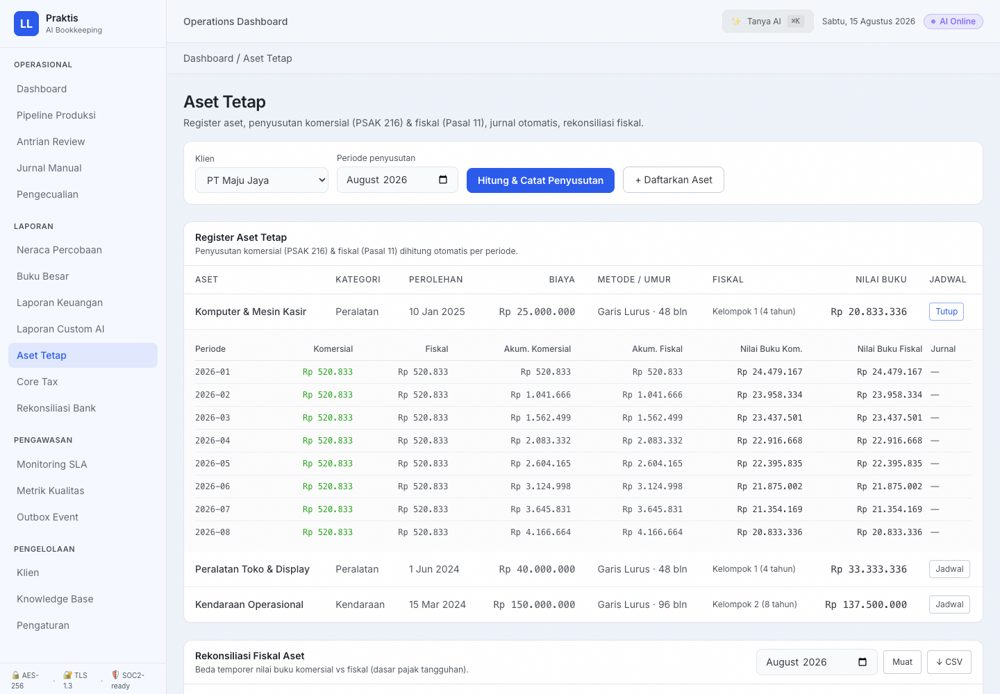

Pembukuan klien selesai dalam hitungan detik, bukan hari.
Praktis mengotomatiskan entry, data cleaning, dan rekonsiliasi — dari firma akuntan sampai konsultan pajak, konsultan manajemen, mahasiswa magang, dan karyawan akuntansi. Satu pipeline AI dari dokumen sampai laporan & SPT.

Lihat Praktis bekerja, dari dokumen sampai laporan
Tonton 60 detik bagaimana AI menyusun draft jurnal, review 4 mata, dan laporan selesai otomatis.
85% waktu junior accountant habis untuk hal yang seharusnya otomatis
Entry manual, data cleaning, dan rekonsiliasi memakan hari — sementara klien menunggu laporan dan tenggat SLA terus mendekat.
Juru ketik, bukan akuntan
Junior menghabiskan 85% waktu mengetik ulang invoice dan rekening koran ke jurnal. Judgment akuntansi yang seharusnya jadi nilai jual, terkubur ketikan.
SLA terlewat diam-diam
Tidak ada visibilitas siapa yang review apa dan berapa lama. Breach baru ketahuan saat klien komplain — reputasi yang membayarnya.
Rekap manual tiap klien
Setiap klien punya pola sendiri: kode akun, PPN, cara potong. Pengetahuan itu ada di kepala staff — hilang saat mereka resign atau cuti.
Satu pipeline AI: dokumen masuk, laporan keluar
Praktis tidak menghilangkan judgment — ia menghilangkan ketikan. Setiap transaksi tetap melewati review manusia berjenjang.
Upload Dokumen
Invoice, rekening koran, atau nota — PDF, JPG, XLSX. Klien juga bisa upload sendiri lewat portal.
OCR Hybrid + Draft AI
OCR lokal (gratis) + LLM fallback untuk dokumen rumit. AI menyusun draft jurnal sesuai COA klien + skor keyakinan.
Review 4 Mata
Junior → Senior → Pajak → Partner. Skor tinggi di-batch approve; yang rendah dapat perhatian ekstra.
SLA & Deadline
Setiap stage punya tenggat. Deadline pajak (PPN, PPh, SPT) diingatkan otomatis — sebelum klien komplain.
Laporan + Portal
Laporan bulanan & SPT tersusun otomatis; klien mengunduh dari portal — tanpa email bolak-balik.
Dibangun untuk standar akuntan, bukan sekadar OCR
Setiap fitur menjawab satu pertanyaan: bagaimana melayani lebih banyak klien tanpa menurunkan kualitas.

Editor Review & KoreksiBaru
Dropdown COA klien (cari nama akun abjad) + saran AI deskripsi transaksi. Koreksi 3 jenis: angka · deskripsi · akun (reclass).

Buku Besar Sekali KlikBaru
Pilih klien + bulan → seluruh akun tampil. Klik akun untuk detail running balance. Export CSV/XLSX.

Laporan Custom AI✨ AI
Minta laporan pakai bahasa natural — "arus kas bulanan", "penjualan per channel". AI susun & hitung, template tersimpan.

Core Tax (SPT)Baru
PPN 11%, PPh 21/23, SPT 1771 dari jurnal APPROVED — koreksi fiskal otomatis + pengingat deadline.

COA Template 17 IndustriBaru
Klien baru langsung punya peta akun — mapping COA otomatis dari template industri, onboarding <2 menit.

Aset Tetap & PenyusutanBaru
Penyusutan komersial (PSAK 216) & fiskal (Pasal 11) paralel — jadwal + jurnal otomatis + rekonsiliasi fiskal.
Dan masih banyak lagi: Command AI (⌘K) · Pipeline Review 4 Mata · Subledger & Aging Piutang · Rekonsiliasi Bank · Monitoring SLA · Metrik Kualitas · Knowledge Base · Portal Klien
Satu platform, lima praktisi laporan keuangan
Mesin inti yang sama — upload → AI draft → review → laporan — untuk semua yang menyentuh pembukuan.
🏢 Firma Akuntan
Review 4 lapis, multi-klien, 25–30 klien per junior.
🧾 Konsultan Pajak
SPT 1771, PPN/PPh, deadline — firma & perorangan.
📈 Konsultan Manajemen
Analisa bisnis, laporan custom, wawasan AI.
🎓 Mahasiswa Magang
Belajar sambil menghasilkan — laporan akuntansi mandiri.
💼 Karyawan Akuntansi
Percepat entry & tutup buku internal perusahaan.
Data klien Anda adalah data paling sensitif yang Anda pegang
Praktis dirancang dengan prinsip zero-trust dan isolasi antar-firma sejak arsitektur awal.
Enkripsi dokumen dan data sensitif saat tersimpan (at-rest).
Semua lalu lintas terenkripsi; kunci dirotasi, tidak ada plaintext di jaringan.
Kontrol akses, audit trail, dan logging dirancang untuk sertifikasi SOC2.
Data tiap kantor akuntan terisolasi penuh — klien firma A tidak pernah bocor ke firma B.
Pertanyaan yang sering diajukan
Tidak. Praktis menghilangkan ketikan, bukan judgment. Setiap jurnal tetap melewati review manusia berjenjang (4 mata) — AI hanya menyiapkan draft terbaik dengan skor keyakinan agar reviewer fokus ke yang benar-benar butuh perhatian.
Setiap draft diberi skor keyakinan. Di bawah ambang (85%), transaksi otomatis masuk jalur review mendalam. Koreksi reviewer menjadi umpan balik yang membuat model belajar pola klien — makin dipakai makin akurat.
Di bawah 2 menit untuk klien standar: tempel daftar COA klien, AI memetakan ke akun standar, partner menyetujui, dan pipeline langsung siap. Untuk kasus kompleks, mapping bisa disesuaikan manual.
PDF, JPG, dan XLSX — mencakup invoice, rekening koran, dan nota/kwitansi. Klien dapat mengunggah langsung dari portal; firma juga bisa upload atas nama klien.
Enkripsi AES-256-GCM saat tersimpan, TLS 1.3 saat transit, isolasi data ketat antar-firma, dan audit trail untuk semua akses. Arsitektur dirancang siap SOC2 dengan kontrol yang terdokumentasi.
Ya — portal klien memberi akses aman via link: klien melihat status dokumen, mengunduh laporan (PDF/CSV/XLSX), dan mengunggah dokumen baru. Notifikasi otomatis dikirim saat laporan siap. Tidak ada lagi email "sudah jadi belum?"
Ubah tim Anda dari juru ketik menjadi reviewer
Demo 30 menit: lihat dokumen nyata berubah menjadi draft jurnal, pipeline review, dan laporan — dengan data Anda sendiri.